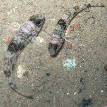
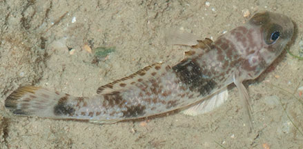
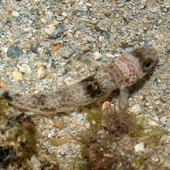

|
|
| fishes text index | photo index |
| Phylum Chordata > Subphylum Vertebrate > fishes > Family Gobiidae |
| Shadow
goby Acentrogobius nebulosus Family Gobiidae updated Sep 2020 Where seen? This little goby is commonly seen on many of our shores including mangroves, muddy bottoms near reefs, sandy pools and among coral rubble. On some shores, almost every pool has one! Sometimes, several are seen together. Its previous name was Yongeichthys nebulosus. Features: Up to about 18cm, those seen from 4-6cm. It has large eyes and three large dark brown blotches on the sides of the body (not easily seen from the top). |
 Sometimes several seen together. Changi, Jul 15 |
 Changi, Jul 06 |
| Tough little goby: It seems to be able to withstand heat and several are commonly seen in shallow pools left behind at low tide. It is poisonous to eat as it contains tetrodotoxin (the same toxin found in pufferfishes) in its flesh and internal organs. In some places, it is called the Poisonous goby. |
| Shadow gobies on Singapore shores |
On wildsingapore
flickr
|
| Other sightings on Singapore shores |
 Terumbu Pempang Tengah, May 11 Photo shared by Loh Kok Sheng on his blog. |
||
Links
|